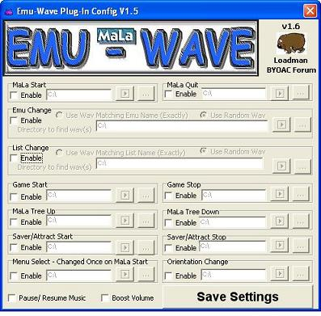
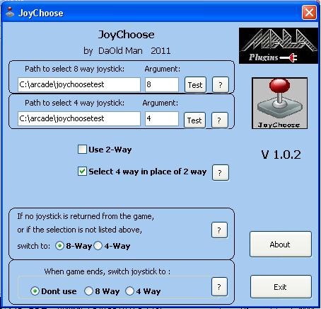
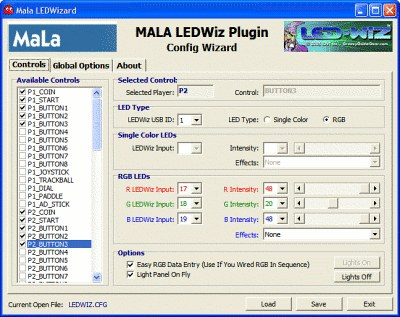
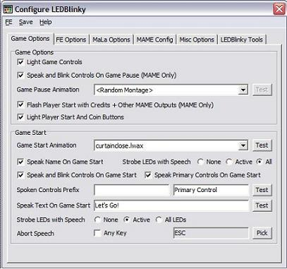
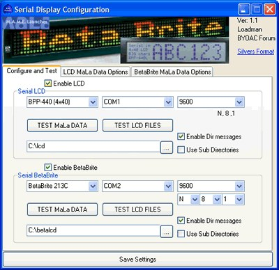
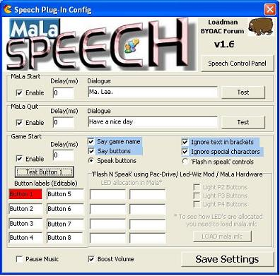
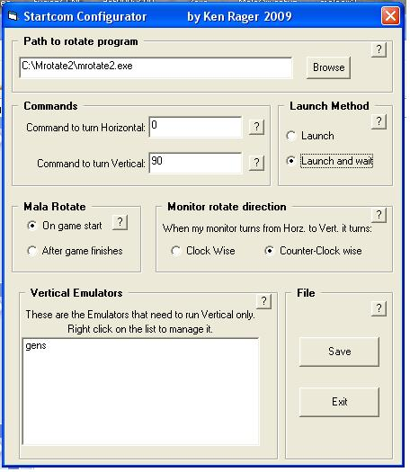
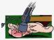

Community Plugins
► SUBMIT YOUR WORK
Email a share link (Google Drive, OneDrive or WeTransfer) along with your name, a description and a screenshot to submissions@malafe.net — accepted submissions will be added to the site.
Plugins extend MaLa with hardware support, sounds, LED control and more. All free downloads contributed by the community. Click any plugin to see full details and download.
► DEVELOP A PLUGINThe Plugin SDK is included in the MaLa download package.

EmuWave
v1.6 by Loadman
Play random wavs from a folder on various events, or specific wav files when swi…

JoyChoose
v1.0.2 by DaOld Man
Automatically switches your joystick between 8-way, 4-way and 2-way based on the…

LedWiz
v2.0 by Swindus, Edge and Loadman
Powerful LED control for LEDWiz hardware. Light buttons in any RGB colour, anima…
No preview
MaLa Focus Logger
v1.0 by TheShanMan
Fixes a bug where MaLa sometimes loses Windows focus.
No preview
MaLa Launcher
v1.0 by TheShanMan
Launch shortcuts when MaLa starts. Essential if MaLa is set as your Windows shel…

LEDBlinky
v3.7.3 by Arzoo
Comprehensive LED plugin supporting LEDWiz and PAC-Drive. Light active/inactive …
No preview
MatureAlarm
by Swindus
Plays a siren sound when selecting a mature-rated game. A fun addition for famil…

Serial Display
by Loadman
Display text on serial displays like a BetaBrite or serial LCD. Supports two dis…
No preview
RotateScreen
v1.0 by Ede
Automatically rotates your monitor when MaLa switches between horizontal and ver…

Speech
v1.6 by Loadman
Text-to-speech. Speaks on MaLa start, game launch (says game name), quit, and bu…

StartCom
v5.3.2 by Ken Rager
Serial communication plugin. Use startcom_config.exe to configure.

UltraStik Mapper
v1.3 by FatFingers
Automatically applies UltraStik map files (.ugc) before a game starts and restor…